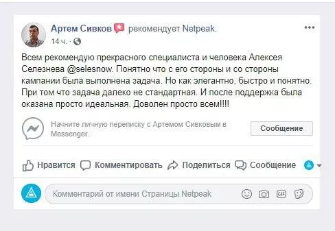
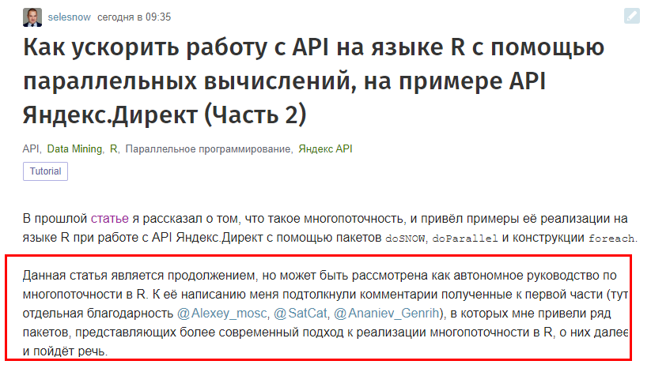

Как создать личный бренд в компании — кейс Алексея Селезнёва, руководителя отдела аналитики Netpeak
Бренд — образ компании, личности, который вызывает определенные ощущения, впечатления, создает настроение, чёткую ассоциацию с продуктом или услугой, определенной сферой деятельности.

Пожалуй, привычно, когда человек-бренд — это владелец бизнеса. Но сейчас стать брендом можно даже будучи сотрудником компании. При этом выступать на конференциях, создавать собственные продукты, вести личные специализированные каналы в социальных сетях. Один из таких людей в нашем агентстве — Алексей Селезнёв, руководитель отдела аналитики.
Восстановлено из архивов интернет.

Отзыв со страницы компании на Facebook
Рассказываем, как Алексей стал человеком-брендом (спойлер — он не планировал), что для этого нужно, как он умудряется соблюдать баланс работа/личная жизнь, не перерабатывая и почему не хочет создавать собственный бизнес.
Основные обязанности в компании
Сейчас это один из самых публикуемых авторов блога: кейсы, аналитика, собственный курс. Но изначально, в 2014 году Алексей пришел на позицию аналитика в отдел контекстной рекламы. И там, по собственным впечатлениям, занимался не совсем своим делом. Было много контроля над специалистами. Это не нравилось (ни Лёше, ни специалистам, которые без радости воспринимали обязанность отчитываться перед ним), не драйвило.
За четыре года свыше 80 постов в блоге Netpeak
Ещё меньше драйва добавила необходимость написать статью для блога. Причина — тему выбрали и сказали «надо сделать», а делать то, что не хочется Алексей не любит.
Медленно и без радости, но материал он написал, пост опубликовали.
Вот здесь бы сказать что-то вроде «и понеслась», но не понеслась. Регулярные публикации начались позже, на позиции руководителя отдела аналитики и с освоением языка R.
Одна из задач моей работы — быстро находить сайты, рекламные кампании для которых показывают низкую эффективность, искать причины этого, способ оптимизировать такие кампании.
Сайтов (проектов в агентстве) всегда было очень много и мониторить, контролировать, анализировать столько информации невозможно, используя только BI-платформы. Пусть даже таких лидеров рынка, как Power BI, Tableau и Qlik. Следовало найти способ собирать данные и из сервисов, которые популярны в СНГ. Здесь нужен был язык программирования. Я выбрал R.
Подробнее о том, почему именно R и как он помогает в решении задач интернет-маркетинга, читайте в статье Алексея.
С изучения и внедрения R началась самостоятельная работа над статьями. Всё просто — когда параллельно изучаешь что-то новое, появляется много инсайтов, вопросов, задач, которые пытаешься решить. Особенно, когда используешь новые знания на практике. Находишь баги и недоработки, ищешь и находишь решение для проектов клиентов. Алгоритм поиска решения, кейсы, рекомендации по внедрению и работе инструмента — это контент. Когда такой контент дает специалист, эксперт, это быстро замечают его коллеги, на статьи обращают внимание редакторы и администраторы специализированных пабликов. Вокруг такого контента формируется свое комьюнити.

Обсуждение материала в комментариях, доработки статей по ним, советы коллег и внедрение по их советам каких-то новых решений. Даже если не любишь писать тексты, такие бонусы могут сильно мотивировать писать ещё и ещё. Затем к постам добавляется участие в конференциях, вебинарах, публикации на внешних ресурсах.
В компании для этого существует максимум условий: внутренние и внешние конференции (организованные нами, внутри групп компаний, партнерами, клиентами и так далее), блог, команда пиар-специалистов, которые могут разместить материал на внешних ресурсах; Netpeak Talks, вебинары от компании, свой ютуб-канал, где сохраняются записи этих вебинаров. Одним словом, вся головная боль от организации ложится не на специалиста, а на других людей.
Но выступления на конференциях — то, что Алексей не любит. Создание презентации, продумывание того, что будет говорить (к каждому слайду пишет текст — о чем будет рассказывать), репетиции (проговаривание с учетом тайминга). Мандраж перед и во время публичного выступления. Выходит, слишком стрессовое мероприятие.
Самое простое — вопросы после выступления. Там могу сказать, что чего-то не знаю. Я не боюсь чего-то не знать.
Курс по языку R
Общение в комьюнити, на конференциях, в пабликах под постами, внутри проектов с клиентами рано или поздно приводит к тому, что начинают поступать предложения о сотрудничестве вне компании. И вот на этом этапе специалист может захотеть уйти либо в свободное плавание, либо ему придется работать в свободное время, чтобы успевать справляться и с основными задачами, и со сторонними проектами. Есть ещё вариант, когда компания не хочет ни с кем делить эксперта.
Я никогда не хотел свой бизнес. Зачем? Чтобы ходить и всем рассказывать, что я работаю на себя? В компании я делаю то, что мне нравится, а, работая на себя, придется заниматься тем, что мне не нравится и не интересно. Например, бухгалтерией, участвовать в поиске и найме сотрудников и так далее.
В 2017 году Максим Уваров предложил Лёше записать курс по языку R. Этим он занимался в рабочее время, предварительно составил план, разбил материал по блокам. И это тоже удалось уместить в свой рабочий день. Почему компания не предъявляет претензий и предоставляет рабочее время для таких дел?
- PR специалиста, и как следствие самой компании.
- Образование сотрудников внутри компании — изначально Алексей договорился с Максимом, что доступ к курсу всем сотрудникам холдинга будет бесплатный, и написал о курсе на форуме компании. Уже в первые пару дней на курс записались около 80 сотрудников. Конечно, не все его проходили, но тем не менее в любой момент при необходимости они смогут открыть курс и найти нужный материал.

Как оценить успех курса, популярность эксперта? Пожалуй, показательно то, что в телеграм-канале R4marketing Алексея сейчас свыше 1700 человек и тысяча подписчиков на YouTube.
Ежедневные обязанности
Если вы не верите в успешный успех (вот так просто написал статью в блог, выступил на конференции и при этом пришел с улицы), то наверняка знаете, за публичностью скрывается много работы. И кроме публикаций в блоге компании и других пабликах, выступлений существуют основные обязанности. Чем занимается руководитель отдела аналитики?
По словам Алексея, его работа и работа отдела заключается в том, чтобы помочь другим отделам компании принимать управленческие решения.
В штате Netpeak свыше 500 человек и поэтому отделу аналитики необходимо автоматизировать максимум процессов и задач. А именно:
- организовать процесс сбора и хранения данных;
- контролировать качество этих данных;
- предоставить доступ к данным всем сотрудникам, которым они нужны.
О каких сотрудниках идет речь?
- специалисты по контекстной рекламе;
- руководители отделов;
- собственники бизнеса.
В первом случае нужна информация для улучшения рекламных кампаний (их эффективности), оптимизации. Отчеты, соответственно, нужны на уровне групп объявлений, ключевых слов и так далее. Доступ к таким данным необходим ежедневно.
Руководитель отдела должен следить за эффективностью работы каждого сотрудника своего отдела и смотреть отдельные рекламные кампании он не будет. Стало быть, ему нужен набор отчетов, с помощью которых он будет растить эффективность и продуктивность своих подчиненных.
Собственнику нужно получить данные о том, в какую сторону развивать бизнес, какие сферы деятельности компании наиболее прибыльные, какие отделы убыточные. И он не будет оценивать каждого сотрудника в отдельности. Особенно, если таких сотрудников сотни.
На каждом из уровней нужно предоставить не просто данные, а упорядоченную информацию в понятных и удобочитаемых отчетах.
Наш отдел аналитики создает учетные инструменты, в которых всё понятно и доступно для каждой задачи всех специалистов. Например, специалист по контекстной рекламе работает с огромным количеством систем сбора аналитики. Это и Google Ads, и Facebook, и Google Analytics, CRM-системы… Всё это лишь детали одного механизма. И если понять, найти, придумать этот механизм, тогда это уже можно называть инструментом аналитики.
Для объединения этих деталей существует множество BI-платформ. А вот как объединить и настроить всё это великолепие — задача аналитического отдела и, в частности, Лёши.
Писать для Хабра — сложно, для блога Netpeak — нет
Так уж получается, что наши специалисты, как правило, очень долго работают над своими статьями. Либо перфекционизм не позволяет поставить финальную точку в документе, либо количество комментариев и правок редактора отбивает желание продолжать. Ещё вариант — нет чёткого понимания, зачем я это делаю и кажется, что тебе нечего рассказать, нет каких-то особых знаний. Ничего нового не скажу.
Я не думаю об этом. Да, когда не хочу писать статью — это трудно и скучно. Но когда сам предлагаю тему, работа идет быстро. Откуда беру темы? Из работы и обучения.
Когда решаю какую-то задачу клиента и выстраиваю процесс, описываю его. Создаю инструмент — изначально это просто код, комментарии к которому пойму только я.
Выписываю тезисы и вопросы, структурирую информацию, добавляю пояснения и связки. В рамках компании это несложно. Я пишу, как есть и знаю, что мой материал потом попадет в руки редакторам. Они доведут до ума. С хаброй не так. Там могу сидеть над статьей несколько месяцев.
На Хабре, после того как модератор вытянул твой материал из песочницы, последующие статьи не проходят официальную модерацию, а публикуются как есть.
Но далее вступает система голосования за каждую статью и личная карма. Если статья ни о чём, или она криво написана, то её заминусуют, если статья совсем плохая, могут минусить твою карму. Карма уйдёт в ноль, или в минус — ты больше не сможешь публиковаться под этим аккаунтом. Хотя один раз карму можно обнулить.
В общем на Хабре автора модерируют читатели, и в любом момент могут отправить его в бан, заминусовав карму. Поэтому над статьями приходится корпеть.
Специалист, которого приходится постоянно пушить, напоминать, приглашать требует вовлечения большого количества сотрудников. Проактивный запускает вокруг себя непрерывный процесс. Это человек, о котором вспомнят/подумают в первую очередь. А выступление очень часто превращается в готовый материал для блога. Расшифровка доклада, добавление визуальной части, дополнительные комментарии (написанный текст иногда требует серьезных доработок, уточнений) — публикация в блоге.
Где искать темы для публикаций:
- общение с клиентом может перерасти в кейс компании в блоге.
- обучение, инсайты становятся поводом поделиться ими в своих статьях, на профильных ивентах,
- непрерывное самообразование — в регулярные дайджесты, публикуемые в собственных каналах
Важно регулировать нагрузку, иначе так можно и выгореть.
Хобби: путешествия, обучение
Самое важное в работе аналитика в сфере интернет-маркетинга — постоянно учиться. Мало знать только инструменты и методы анализа, нужно постоянно обучаться чему-то новому. Поэтому, по словам Алексея, работа должна быть больше хобби, когда интересно и хочется осваивать новые инструменты, решать сложные задачи, находить точки роста для проектов, когда кажется, что уже все попробовали и нереально найти что-то новое.
Здесь, конечно, возникает вопрос, как не потерять интерес к своей работе.
Думаю, дело в том, что круг моего общения вне работы — люди, которые далеки от интернет-маркетинга. Я люблю общаться с людьми, ходить в гости, принимать гостей у себя. Регулярно путешествую с семьей. После каждого путешествия монтирую ролики — отчет о поездке. Как это было, что мы видели, как проводили время. Правда, делаю это очень долго: в свободное время отбираю материал, монтирую. Наверное, можно сказать, что это мое хобби.
А еще в свободное время я учусь. Кажется, прошел все курсы по R на Stepik.
По словам Алексея, ещё одна причина отношения к работе, как к хобби — отсутствие рутины. Почти все монотонные задачи — на подчиненных и на тех, для кого создаются те или иные системы учета, анализа.
Ещё бывает починка поломок — это примерно 20%, остальные 80% — новые задачи, это как раз самая интересная часть работы. Именно новые задачи заставляют изучать новые технологии и инструменты и оставаться в седле в одной из самых динамично развивающихся сфер. Параллельно закреплять знания, выступая, создавая статьи, публикуя обзоры и собственные курсы.